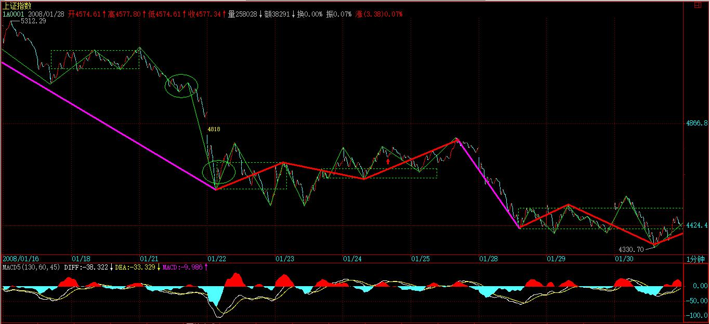

(2008-01-29 15:49:06)
世界上，从来不缺乏贪婪，最大的表现之一，就是上帝式思维。有一上帝，你信了他，所有事情就是他的，你就又天国，又永生的，这本质上，就是人类的贪婪所制造的幻象。
在市场中，操作中，这贪婪的最大表现就是希望寻求一种预测性的、一劳永逸的上帝式指标、模式，先验地决定了一切，然后有这东西，在市场中就可以又天国又永生地财源滚滚了。【韶山映山红】“先验”都是“人类的贪婪所制造的幻象”。】
这是什么？典型的贪婪思维，这种人，佛出世都救不了，最终就是当青蛙的料。而市场中，最多这种人，最下劣的，就是希望找一根万能拐杖，最好这拐杖可以自动给出所有的买卖，这样就什么都不用干地财源滚滚了。
贪字和贫字就差那一点，如此贪婪的想法，不被市场所屠杀，真是笑话了。
市场中操作，最相似的，就是和中医、兵法、诗歌类似。
学中医，你首先要把中医的理论、系统、思维方法，分类原则等等给搞明白，按照中医的系统，所有的病都是有一个对应的理论输出与实际相符合，这就如同本ID的理论，所有的市场机会都会被本ID的理论所一一对应地输出。【韶山映山红】首先是理论学习。】
但你光知道输出，什么用都没有，你学了一大堆理论，没什么用，因为理论知道和应用是要靠人的，而人的素质、水平等等的不同，在应用中相差就太远了，所以最终都归结于人的修炼。【韶山映山红】学以致用，知行合一。】
但是，理论的输出是最基础的，你连理论的分类等等都搞不清楚，那么谈应用就很可笑了。所以，首先你当然要完全吃透理论。【韶山映山红】先知后行。第一步，“完全吃透理论”。】
一个中医，学了理论，然后就要开始玩望闻问切之类的游戏，这就等于本ID理论中看市场机会的当下显发。
有些人，总是想预测，那么请问，一个医生，他知道下面肯定有一个病人要来，难道他还需要预测一下这病人的性别、什么病，可以开什么药？如果世界上有这样的医生，你敢去看吗？
同样，市场的机会的到来，就如同要来的那个病人，你不需要对他预测什么，点位、时间、什么都不需要，你只需要等他来的时候对他望闻问切就可以了，事情就这么简单，为什么这个思维就拐不过来？
机会必然按理论的要求输出，第二步就是看机会的显发，对之望闻问切，这就是更高的一种要求。这就如同医生，能熟练地望闻问切，那是需要功夫的，需要实践中增长能力。所以，你开始的时候，总是看走眼，这太正常不过了。多看，多练习，这就唯一的渠道。【韶山映山红】第二步，学习“望闻问切”。】
再说一次，一定要看走势图，那是世界上最昂贵的图画，最昂贵的艺术品，多看，就如同培养你的鉴赏力，为什么玩古董的，很多人总是被假玩意骗，而有人就能专破假玩意，这就是鉴赏力等的问题，但这是需要磨练的。磨练的时候，被骗几次，那不是最正常不过的事情？
为什么很多人在市场中很痛苦，就是他不热爱这走势，走势是最好的艺术品，你站在热爱的角度，才能激发你的鉴赏力。否则，你脑子里总是被赢亏之类的贪婪之念所占据，眼睛怎么可能不被蒙蔽？【韶山映山红】控制、摆脱“赢亏之类的贪婪之念”。什么样子算是“热爱”？★以后研究。】
望闻问切有成了，后面最难的就是操作了。【韶山映山红】第三步，学习“操作”。】
操作，就如同中医的开药方。会看病，基本就等于中医的1/10，而用药、开药方的难度，就是后面的9/10。而没有最后这开药方，前面的所有东西都是白搭的，同样，操作也是这样。
开药方，就如同行军布阵，所谓用药如同用兵，如何用，这可以用你一生去修炼。这就如同操作，操作是一生的事情，除非你离开市场。
中医开药方、因人、因时、因地等等因素的不同而开，就如同打仗，哪里会有一样的仗？仗仗都不同。
中医不同西医，西医就把人当机器，所有的人，只要是所谓同样的病，就给你同样的药，完全的流水线机械化生产，而现在很多人在市场中的思维，就是这种思维。
当然，所有的不同里有这一个共同“不患”的基础，例如，市场的运行的“不患”基础就被本ID的理论所完全描述。同样，所有用药的“不患”基础也被中医的理论所描述。也就是，无论怎么折腾，都出不了这基础。这是不同中的同，患中的不患。
明白这点，操作就有了一个大的不患背景，而这背景之上，就是一个创造充分显法的过程，每个人，按照自己的能力、修养等开出不同的药方，给出不同的操作记录。这里是一个没有止境的过程，不断修炼下去。
具体说，就是在一般程度上，你必须遵守买卖点的原则去买卖。但是，这并不是一定的。例如，本ID就经常愿意在买卖点偏移一点的地方去买卖，为什么？因为那样，可以买卖到更多的数量，或者可以制造出一些特别的东西达到更大的目的。【韶山映山红】技术，艺术。】
【韶山映山红】为什么“在买卖点偏移一点的地方去买卖”，“可以买卖到更多的数量”？★以后研究。】
【韶山映山红】“制造出一些特别的东西”是什么意思？“达到更大的目的”又是什么意思？骗线？★以后研究。】
【韶山映山红】静姐说，缠师的习惯，庄家建仓的成本附近，利用庄家洗盘来吸筹，不用坐庄，坐轿。】
【韶山映山红】按照下文对“偏移”的描述，偏移是次级别运动。也就是说，在买卖点出现以后，在次级别的运动中去买卖，甚至可能做出不按套路出牌的形态，达到骗人的目的。所以“并不是一定的”“必须遵守买卖点的原则去买卖”，要学会识别背了又背的假象。】
【韶山映山红】具体说，背了又背的假象可能包括：１，一买之后又有低点，二买低于一买，判别标准是二买对一买要有线段类盘整背驰。２，二买之后又有低点，形成新走势的本级别中枢，判别只能等这个新中枢的第三类买卖点。３，三买之后又有低点，下上下线段类盘整背驰形成三买，然后又形成中枢，中枢盘整背驰之后的低点还是三买。 总之，就是线段类盘整走势向中枢类走势演化的过程。★可以做个专题，以后研究。】
这就如同写格律诗，你开始的时候，必须严格按格律来，如果没有按格律来，那是你的水平问题，你千万别以自己是写拗体来自我安慰，那将害了你，以后你就永远和真正的格律诗无缘了。但，当你已经自由于格律，得心应手时，你就可能要根据诗歌的内容，自设声律而构成奇响成为所谓的拗体，这时，就是出神入化的过程了。而操作，同样如此。【韶山映山红】这里是缠师唯一提到“格律诗”的地方。】
对不起，还想写，有一坏蛋打电话来说要谈一个项目的事情，这个坏蛋太熟了，不能推，就先写到这里，以后继续
【韶山映山红】原文就是这样没有句号结束。全文加粗绿色字体（R0G153B0）。
【韶山映山红】阿娇博客：娇：一熟悉理论 二望闻问切，静态图分析，看机会的显发 三操作 四 出神入化操作 】
(2008-01-30 15:23:08)
这题目说的什么，大家都很清楚。今天的消息，刺激了一个震荡高点，然后再回杀，由于减息的玩意还没出来，所以，尾盘赌消息的又来了，这就是发生在看别人脸色过日子的日子里的一件无聊事情。
看着600737、600078之类的股票，是否有点感动，这世界是需要不看别人脸色的人的，但，这东西是合力的，光有几个这样的人，成不了气候，如果别人都成了爱看别人脸色的人，那这市场还是别人的，最后，剩下不想看脸色的，可能也转去玩别的不用看别人脸色的活动了。
【韶山映山红】600737新疆屯河，2007.03.07中粮屯河，2017.02.17中粮糖业。】
【韶山映山红】600078澄星股份。】
说实话，现在本ID已经没有上次接石头的兴趣，对今年的行情，本ID去年已经给了明确的定位，就是题材股大搞，不管指数，所以才有了跌了1000多点还创新高的品种。
但指数还是会起来的，在那展望里，本ID给出本年的节奏是“扬抑大扬大抑”，所以，多头还是会有面包的，只是多头如果还看别人的脸色，没点自我精神，那本ID宁愿把节奏说错了。
中石油那些玩意出来前后，是一个转机可能出现的时候，这时候也到了，但这东西需要合力，本ID现在确实没兴趣再去折腾大的玩意了，把自己的一亩三分地种好就算了。但呼吁一下总是可以的，合力，需要大家一起来。【韶山映山红】601857中国石油。2007-11-05中国石油A股上市，总股本1830亿股，流通30亿股。2008-02-05中国石油A股发行法人配售10亿股上市，流通40亿股。】
说实在话，本ID宁愿A股跌到2500点，也希望见到美国全面破产，让美国再来一次1987年，这是本ID最愿意看到的。
但必须很清楚地说，美国佬这次会用所有的坏招来摆平的，问题的关键是，不要当傻子去给美国佬埋单。
大盘，很简单，现在是纯消息主导，明天美国要减息了，这边就又会冲动一下。但这种冲动不是以我为主的，以我为主，还没有找到合适的借口。
技术上，4400点那中枢的震荡逐步向5分钟扩展去，【韶山映山红】“4400点那中枢”是指下面这个中枢，此时还只是1分钟级别，4400点是开始震荡的1分钟中枢的ZD附近。按照飞狐历史数据的划分，开始形成第9段了，“逐步向5分钟扩展去”。】

走势上很简单，如果不出现这中枢的第三类买点，向上的冲动也只能是冲动。【韶山映山红】“向上的冲动”是指当日的跳空高开。】
580989，如前所说，震荡幅度减少，但震荡机会依然很多，0.6这个中枢的威力是否够教科书，有眼睛的都会看了。
第一次年线，不出意外，还是如去年底所说，是一个喜剧。问题的关键是，这次喜剧之后，如果没有了自我意识，最终只能是悲剧。
先下，再见。
(2008-01-30 15:57:44)
这不是针对任何具体的政府的，而是一般性的表述。这句话，显然是武断的，但在这样一个时刻，必须有这样的武断。
美国佬，靠两次世界大战积累的玩意，占据半个多世纪金融霸权所制造的虐夺，支持了其半个多世纪的所谓美国梦。
这梦后面，不过是一个国家对全世界的虐夺与敲诈，是全世界养肥了那美国的金元世界，而美国这玩意，在全世界敲诈了这么多，竟然还大面积赤字，加上美国人超前消费所制造的亏空，这空中楼阁早该崩溃。
其实，这空中楼阁早要崩溃，但所谓新经济以及后进国家的廉价发展，使得这崩溃给大大推迟，但崩溃总要到来。
当然，美国佬肯定又再玩原来的招数，把危机转嫁到全世界去。因为全世界中不缺乏无聊的政府，脑子进水地给美国佬埋单，有一种很可笑的观点，没有美国佬，我们的人民哪里有饭吃，没有美国佬让我们出卖廉价的劳力，我们哪里有饭吃？
当面首的，总会有面首的思维，因为他们认为他们天生就是面首。既然这样，就面首去吧，用你们的血汗继续养肥美国佬。
我们不是对美国佬一定要杀绝，而是希望这次崩溃后，一个新的世界经济秩序能被重建，那一国独大的时代必须结束。美国的经济崩溃，是他们自己造成的，谁都不能为此埋单。
当然，美国崩溃，全世界都要影响，为什么？因为现在的世界经济秩序是一种完全不合理的系统结构，里面有着太不安全的风险传导机制，这必须打破。
而不破，哪里有立？要破，就需要美国来次彻底的崩溃，这样，才能真正立起来，至于这过程中可能的痛苦与震荡，必须承受也只能承受。
可惜，很多事情，该有的都还没有。
例如，如果我们现在已经有一个超大的蓄水池，那么，从美国外逃的资金就会有一个落脚地，可惜，我们没有，我们该建池子的时间都给荒废掉了。但时间还有，我们必须抓紧，否则，这机会一旦失去，一切都晚了。
其他更多的，就不想说了，想了都觉得无聊。
这世界可能就是这样了，这样就这样了，我们今晚喝豆汁。
下，再见。
(2008-01-31 15:13:08)
3点半有一无聊人从大连专程过来要谈一香港市场收壳的事情，谈完以后回来会写一篇纯技术分析后面走势的帖子。本ID现在的心情已经完全过年化了，想起还要有事情干就头疼。
大盘今天的走势是一点都不奇怪，
看别人的脸色，就是这样的了。【韶山映山红】“这样”，不高也不低的收缩延伸震荡。】
减息又怎么样？其实，即使对于美国，减息与否，要死还得死。减息后一旦引发资金大量抛售美圆资产，那死得更难看，可惜，现在接收这大量外逃资金的池子就缺一个中国的，想起就没劲，早干什么去了。
经济是一种专门的学问，管经济的就该至少是学经济或在经济圈里泡大的，否则，打铁的、挖地的、修坝的、卖大饼的，谁都可以经济一下，这经济怎么经济？
一句话，这次下跌，估计把印花税弄下去的可能性还是不大，大概，还需要更猛烈的暴跌，【韶山映山红】这个该怎么分析？以后研究。★】当然，反弹会有的，印花税一日不下，本ID的兴致将继续低迷。【韶山映山红】查股票交易印花税历史，2005年1月24日下调为1‰。2007年5月30日上调为3‰。2008年4月24日下调为1‰。2008年9月19日起，由双边征收改为单边征收，税率保持1‰，至今。】
今年，就看三月的会后有什么改变了，【韶山映山红】第十一届全国人民代表大会。】如果没有，那该怎么就怎么了，那种接石头的活，本ID肯定是不会再去干了，这么高的交易成本，凭什么啊？
短线技术上，没什么可说的，现在这1分钟的中枢突不上去就继续下台阶。【韶山映山红】此时的震荡已经满足9段。没有提升级的事，还是“现在这1分钟的中枢”。】
个股方面，很多股票都要先主动回一下了，否则，顶在高位上抬杠铃，没那必要。
现在，关键不是股市本身，而是信心问题，一个最简单的问题，为什么中国的投资者就要忍受全世界最高的交易成本。
有谁能回答这个问题？
本ID在去年底已经明确说过了，今年一定要看到印花税的下降，不管是谁，做错了就要改，不改就不行。
本ID现在根本不担心股市，因为有更担心的，就怕这次经济的对局，一旦应付错了，那比股市更严重的事情还等在后面。
我们能应付对吗？抱歉，本ID没信心。
如果你还有心情，就请读读本ID这个梦：“步老杜《登高》韵记梦 2008-01-26 10:23:21 ”
先下，再见。
(2008-01-31 18:44:04)
谈完了，那人赶飞机去了，专门跑一次，这事情还真没法推，苦啊，又多一件无聊事情。回来先把帖子写了再吃饭吧。本ID就怕答应的事情不完成吃饭都不安心。
收盘的帖子，非技术的纯粹直话直说的，这是走势后面必须的东西。【韶山映山红】“走势后面必须的东西”是什么？★以后研究。】
但操作上，还是必须按技术来，所以技术是第一的，我们可以用一些语言对分力进行敲打，但这不能蒙蔽了技术的眼睛。特别，对于一般的散户来说，除了图形，你是最公平地和所有人同时看到的，你还能有什么依靠？【韶山映山红】对于一般的散户来说，只有图形是最公平地和所有人同时看到的，所以是唯一的依靠，所以“技术是第一的”。】
还是和3600相关，为什么？因为上海的指数从一开始就和这相关，例如90年代初的45点，2001年的2245点等等，这次的行情，一样与此相关。【韶山映山红】这里说的“90年代初的45点”不知道是什么意思，没有这个点位。★上证指数起源于上海静安指数，是工商银行上海市分行信托投资公司静安证券业务部于1987年11月2日开始编制，于1991年7月15日公开发布，以1990年12月19日为基期，基期值为100，以全部的上市股票为样本，以股票发行量为权数进行编制。】
【韶山映山红】“2001年的2245点”是之前一波牛市的顶点。】
4335点的530，6124点的高位，相差基本就是1800点，【韶山映山红】实际相差6124-4335=1789点。】
下来的第一个位置4778点，就是1800点的3/4，【韶山映山红】实际相差6124-4778=1346点。1800点的3/4是1350点。】
那么，现在，到了1800点这个位置，【韶山映山红】最低点实际相差6124-4330=1794点。】所以这个位置是很重要的，而且与年线相关。【韶山映山红】当日MA250是4390.12点。】5522点下来的1200点，也在这个位置，【韶山映山红】最低点实际相差5520-4330=1190点。】所以这个位置是诸多因素所相关，技术上很重要。
由于这次下来，已经把4335点触及，因此，一个日线级别的中枢就已经在形成中，4335点上下就是这个中枢的一个必然部分。【韶山映山红】4335点是530前的高点。回踩导致中枢扩张升级。】日线级别的中枢就已经在形成中
这个中枢，是从1000点上来第一个日中枢，所以这个中枢将影响至少很多个月的走势。
也就是，现在，从中线的角度，一个大的日中枢震荡已经形成。【韶山映山红】“日线级别的中枢就已经在形成中”，“大的日中枢震荡已经形成”。】
这个中枢震荡的幅度，是以3600点为基础的，上面1800点，下面对称的，也可以有1800点。换言之，现在就算跌到2500点，【韶山映山红】6100-1800=4300，4300-1800=2500。】也不过在这个中枢震荡的范围内。【韶山映山红】这里是中枢震荡的幅度区间的计算方法。★★】
有了这个中枢震荡的大结构，对后面的市场走势就有了一个很宏观的把握。显然，目前这个中枢的中间位置，会在很长时间内反复见到。像2500点、6100点，都如同580989在0.976的那样的瞬间震荡位置，而目前位置，就如同最近580989的0.6上下，是一个反复可以见到的位置。直到这个中枢被破坏为止。
这个中枢震荡，可以以450点，3600点的1/8为一格，上面，4778是第一线压力，5228点是第二线压力，下面的位置如此类推。【韶山映山红】以450点为一格，第一线压力4778是K线上实际的点，第二线压力5228点是4778+450=5228的计算点。】
当然，在具体的划分中，可以把450再细分，这对短线有一定意义。
由于目前是一个日的中枢，因此，最大的偏移级别就是30分钟的，如果有一个30分钟的向下偏移，那将构成最好的中短线机会。而且，类似5分钟的偏移，也构成好的短线机会。 当然，如果你的超短线的，也可以关注相应的1分钟偏移。【韶山映山红】这里第一次出现“偏移级别”，即中枢震荡的次级别及以下级别。 】
在足够长的时间内，所有的市场机会，都会是因为对于该中枢的震荡偏移所引发的，配合30、5、1等的内部结构图，你将在这大型震荡中如鱼得水。【韶山映山红】这一段话让我们理解什么是偏移。“该中枢”是指本文所说的“从中线的角度，一个大的日中枢震荡已经形成。”后面“足够长的时间内，所有的市场机会，都会是因为对于该中枢的震荡偏移所引发的，” 这个“大型震荡”和单纯的中枢延伸有区别。中枢延伸专门特指没有第三类买卖点的，中枢震荡就可以有。】
【韶山映山红】中枢运动有两种形式：中枢移动和中枢震荡。中枢震荡包括中枢延伸和中枢偏移。】
【韶山映山红】中枢扩展是结果，是形态组合。中枢偏移是运动，是过程。】
【韶山映山红】中枢移动不等同于趋势。“趋势，本质上就是中枢移动的延续，”也就是说，中枢移动是指中枢离开后的强势运动过程。】
【韶山映山红】“什么是陷阱？陷阱必须由中枢而来，所谓陷阱，归根结底都是中枢震荡的结果。如果不是中枢震荡，而是中枢移动，那就不可能是陷阱，而是真陷进去了。”也就是说，中枢震荡包括围绕中枢的运动。不是中枢移动的状态，就是中枢震荡。】
【韶山映山红】“别小看了最基础的分段技术，5522点下来，近500点，就是一个线段的类下跌，你明白了，就主动了，就享受了。为什么？最猛烈的中枢移动中，往往就是一个线段的类趋势，所谓的单边跌势或涨势，就是这玩意，明白了，你说你能不爽吗？”验证了中枢移动是指中枢离开后的强势运动过程。】
本ID早说过了，今年只要你会震荡，你赚的钱绝对不比去年少。有了这样一个大的震荡图，抽血的机会多了去了，好好把握。
节前后市场，能否依靠年线和中枢中轴制造一次向4778点的中枢偏移，明天就有初步答案，
如果能坚守在目前位置震荡上5日线，而周一又不出现前两周一样的坏消息，那么，这种偏移就有基础，否则，绝对需要先砸出空头陷阱再玩这游戏。
注意，本ID对市场从来都是充满信心，但本ID的信心可不是死多头那样一定要向上的信心，本ID的信心是在震荡中抽血的信心，那样一定要单边上涨才赚钱的幼稚行为，本ID没兴趣搭理。
本ID没信心的是市场以外的事情，只要本ID有兴趣，大熊市一样可以玩得很开心，就别说震荡市了。但市场以外的事情，本ID真的没信心，而市场以外的，才是本ID所牵挂的。
本ID一早说过了，对于本ID来说，经济变成怎么样，又有什么影响？但对于大多数人，经济的走势太重要了，比股市的要重要得多。
本ID希望每个中国人都有自己的面包，本ID日夜担心的，是中国三十年的经济大升浪会被某种幼稚的因数所打断，除此之外，本ID没什么可担心的。
大升浪被打断了，本ID照样可以风花雪月花天酒地419，很无耻但很经济地等着在经济大跌势的末端抄大底，但其他人呢？
不说了，吃饭了，该什么是什么，万古云霄一酒杯。
(2008-02-01 15:17:48)
听说有人还在发节前连涨三天的梦，但就不许！类似的梦还有，例如现在砸下来了为了奥运如何如何，简直脑子进水了，别以为股市有什么真正的地位。按照市场经济，股市当然有着绝对高的地位，但是，这不是现实。
请注意一个事情，听说春晚里将有一个节目对所谓的股民进行强烈嘲笑的，如果这节目最终播出，将是对三十年经济大发展的最大讽刺。【韶山映山红】2008年央视春晚的相声《疯狂股民》(武宾、李伟健)。】现代经济，最高级形式就是虚拟化的，100多年前，美国还比不上阿根廷，就是因为美国大力发展了虚拟经济而阿根廷没有，所以，最终阿根廷也就剩下别为她哭泣的歌声。【韶山映山红】阿根廷别为我哭泣（Don't Cry For Me Argentina）。出自音乐剧《艾薇塔》（Evita）。描述阿根廷的精神领袖、前第一夫人艾薇塔·贝隆从一个受尽社会歧视的私生女到权倾阿根廷的主政者的传奇一生。】
股民，这个称呼本来就是侮辱性的，应该是投资者，这是构成现代经济最重要结构的伟大人群。一个不尊重投资者的国家，不可能有强大的虚拟经济和真正强大的经济，这就是历史的结论。
如果脑子里还有一丝幻想的，请再把本ID关于今年走势展望的帖子再读一次：“2008年行情展望 2007-12-20 15:59:05”
今年的行情，就是早干早有面包的走势，真正的投资者，在12到1月的题材股走势中，已经赚到了第一笔买面包的钱。有些可笑的人，觉得，4778点到5522点也算行情啊？千万别看不起这一段，如果在大的跌市里，这可能就是全年最大的一轮走势了，而在今年，有极大的可能，这就是第二大幅度的上涨。
在展望中，本ID已经很明确说了，今年的节奏是“先小扬再抑接着大扬后大抑”，而且强调“至少有两个顶部是必须注意的，第一个就是6124点大调整的第二段上升所构造的顶部，这是一个小顶”，5522点就是这样一个顶。
本ID在剧本那次说了：“关键看在5462到5675点时间段内政策面的风向，风向不对，那就先把买胶水的钱换成买棒棒糖的，一人一个棒棒糖，看你要棒还是糖。”【韶山映山红】5462是第一段下跌的最低点，在反弹时成为阻力位置。反弹回跌幅2/3的位置5675是另一个阻力位置。】显然，5522点后平安、美国之类的因数足以让胶水换棒棒糖了。但后面的剧本依然有效，就如同本ID告诉你至少要见到腰斩的中石油一样。那胶水糊的鸟儿会有的，那就是本年第二波行情，现在，不过是为这行情进行准备。
大概没有人会注意，本ID在1月15日故意给出的这个帖子也被很多人认为是炒冷饭，请现在再去看看这特殊时间里帖子内容的实用性，看看当时日线顶分型刚构成后你是否如课程那样操作了，如果你真认真看了里面的内容，你该怎么操作还用本ID说吗？如果还不明白，请再看一次：“教你炒股票93：走势结构的两重表里关系2 2008-01-15 18:08:05”
注意，本ID只是陪练，陪练的任务，只是在关键的时候把该用的工具放到你眼前，如果你看不到，那就算了。
本ID有时候说的结论会有所修改的，例如，原来对中石油，给出的就是如中人兽，也就是到30筑底上去，那是因为那时候期货这玩意还没被打压住，后来，一明确这玩意被压住了，本ID就把那至少24的酒席故事告诉各位了，这就是有所修改，为什么？一切是合力，有一个重要的分力改变了，当然要有所修改。
但是，有些东西，本ID不提，就是无所修改。例如，对于20年的大牛市，20年后至少3万点的结论，本ID没有任何修改的必要。除非中国经济自废武功，否则，本ID的结论无须修改。
其实，对行情的转折契机之一，本ID前面早就明确说过，只是看的人不注意，就是要等中石油那10亿玩意出来的前后，底部不是一天构成的，是要反复制造恐慌搞出来的。【韶山映山红】601857中国石油。2007-11-05中国石油A股上市，总股本1830亿股，流通30亿股。2008-02-05中国石油A股发行法人配售10亿股上市，流通40亿股。】
有人可能觉得很残忍，废话，不恐慌，没人放血，哪里会有底部？
这几天是什么？就是前期强势的题材股补跌，这是所有探底行情中必须有的，强势股补跌后，行情才可能进入真正的筑底。而这点，本ID早就说过，没有人会永远举杠铃的。
那么，行情怎么慢慢点燃？行情的点燃，都需要领头的，也就是有一个傻子，疯狂地裸奔，把大家逐步唤醒兴奋起来。这个先裸奔的，一般只有三类，新股或有突发大题材的，还有就是前次行情崩溃的祸首以及率先被打压调整的。
如果你还没见到裸奔的，那么就意味着，行情还没被点燃，依然在底部构造阶段。现在的问题不过是：睁大你的眼睛，发现那准备或已经率先裸奔的。
其实，行情也简单，有人全球裸奔的，就是大行情；有人全国裸奔的，就是中行情；有人全市裸奔的，就是小行情；有人只能在家里裸奔最多在窗口晃悠两下的，那就是反弹行情。 行情，与最开始的裸奔力度相关。当裸奔蔓延了，行情就开始展开。当所有人都习惯于裸奔了，行情就因高潮而死。
今天的走势，不过是先尝试砸一下陷阱并让那些幻想节前连涨三天的丢一下脸。【韶山映山红】“砸一下陷阱”者，背驰也。】
当然，连涨两天还是有希望的，本ID倒不拒绝两这个数字。前提是，请先冀望周末没有什么不招人待见的事情，其次，那石油出来时不要过分变态。【韶山映山红】601857中国石油。2007-11-05中国石油A股上市，总股本1830亿股，流通30亿股。2008-02-05中国石油A股发行法人配售10亿股上市，流通40亿股。】
现在，更大的问题是，这么高的印花税，我们搞一波上去，难道就为了让平安能顺利圈走1000亿？想起这个事情，本ID完全没有冲锋打头阵的兴趣了。自由世界的勇士们，你们冲吧，本ID在后面跟着，一看你们不行就放枪给你们送行。
反弹会有的，面包会有的，但在春晚要被严重嘲笑而还要被平安之流上千亿地合法打劫，并且更要继续接受一个最高印花税的奖赏，在这种情况下，谁还愿意当炮灰去发动一轮全球裸奔行情呢？
今年，我们去铁岭裸奔，或者保定也行，各位选择吧。
周末，不妨先在家里练习练习？
先下，再见。
(2008-02-01 19:17:37)
快过年了，到处繁忙，还是待在家里塌实。一般周五晚上都不写帖子，这次就破例一次。因为在周六、日不谈股票，就抓紧今晚再说说股票。【韶山映山红】2008-02-01，腊月廿五。】
资本将人异化，其实市场同样让人异化。看看现在市场里的人，很多都变得神经叨叨的，心里就剩下黑马、上涨之类的机械反应与欲望，这样的市场人，真是太悲哀了。
没有幽默感与修养成不了好的操作者，一个看到铁岭、保定只会想到暗示了什么股票的操作者，也不可能有什么长期的操作成功。
铁岭不过是来自赵本山的一个幽默，而保定就是郭德刚的，当然，南方的朋友可能有点不熟悉，这不奇怪，但其实就算你不知道这些幽默的意思，从文中对裸奔的分类就能明白其中好玩的地方。【韶山映山红】《梦中婚》全世界旅游，眼界要开阔……去保定。上有天堂下有保定。保定满大街那都是珍肴美味上等食品。驴肉火烧火烧驴肉，我乐意放香菜就放香菜，我一手一个驴肉火烧，我玩了命的吃啊，神仙一样的生活。包了保定驴火国际酒店，两层的摩天大厦。……】
本ID一本正经地解释这个问题，其实就很搞笑，这只是小事。但有些孔男人的学生，见到本ID说第一次见年线是喜剧，就以为一碰到年线就起来就是喜剧。大概，孔男人类人写的东西都是这样的白开水。知道什么叫以哀景写乐倍增其乐吗？想想，对5日线的回试还要故意砸穿恐吓部分不坚定的，更不用说这250天线了。
不把这哀景写足了，哪里会有好的喜剧，连这点修养都没有，还操作什么股票？
很多事情都是相通的，例如在顶部的时候，就是以乐景写哀倍增其哀，文学、艺术和市场是相通的，只不过你有没有这种修养和感触而已。
市场，最终是人的修炼，你的全部修养是否花架子，在市场中一下就检验出来。很多所谓的文化人看不起市场，因为他们不过是些花拳绣腿的玩意而已。
一个真正的成功的操作者，一定是一个哲学家、实干家、艺术家、有幽默感的人，否则，市场中任何的弱点，可能就足以致命。
和平时代，没有比市场更能提高人的地方了，好好珍惜吧。
【韶山映山红】原文，全文红色加粗宋体，字号18。】
[匿名] 学习 2008-02-01 19:20:36
请问zf这样会不会是“韬光养晦”呢？
-
那痴呆的最“韬光养晦”了。
2008-2-1 19:24
先下，再见。
2008-2-1 19:25
[匿名] 谦益
休息一段时间很好.
清仓.看雪.体悟.
万物一理.此言确也
股市的涨跌真的象雪.象雨.象风一样
雪雨风都是一个过程.事前有征兆.中间有渐变.事后可察鉴
试想.雪正大.雨正紧.风正猛.你能一下就让它们停乎
俗云天要下雨娘要嫁人为不可当之事,何故 势也.股票也是如此.
所谓空手接白刃不就是在雪正大.雨正紧.风正猛的时候企图回天乎
级别有大小不可不分,趋势有上下岂能不察.趋势向上时.按小级别操作效益最大.趋势往下时按大级别操作风险最小.
君不见阵雨乎.下雨为主.间歇为辅.主题是下雨.趋势向下也是如此.主题是跌.间歇是反弹.跌是大级别.反弹是小级别.阵雨是来的快去的急.天气预报都搞不准也.若几点几分下焉.几点几分停焉.几点几分又再下焉.几点几分又再停焉.现在的反弹也是如此.故曰趋势往下时按大级别操作风险最小.
至于势向上时.按小级别操作效益最大.反证可也
老缠说涨跌都赚上下痛吃.理论可行实际难为.诸位同学不能不查
以上杂乱所谈.意在趋势理论和缠论相结合.对于不对.各位察之
2008-2-1 21:35
[匿名] 赌徒
哈,谦益回来乎?俺们赶紧打个招呼,别来无恙焉?
风紧君扯乎,雨小君又来,想进嘛票焉?嘛票又再涨焉?请曰,请曰!
以上笑谈,意在讨教,君不可不察!曰与不曰,端在阁下焉..
2008-2-1 22:01
[匿名] 谦益
哈,谦益回来乎?俺们赶紧打个招呼,别来无恙焉?
风紧君扯乎,雨小君又来,想进嘛票焉?嘛票又再涨焉?请曰,请曰!
以上笑谈,意在讨教,君不可不察!曰与不曰,端在阁下焉..
-----------
谢谢
其实这段时间的思索
就是这句
级别有大小不可不分,趋势有上下岂能不察.趋势向上时.按小级别操作效益最大.趋势往下时按大级别操作风险最小.
级别之间的生化制克,以及趋势理论和缠的理论的结合
2008-2-1 22:46
[匿名] 稳住
市场的赢家首先是一个合格的人 否则心浮气躁怎能最终胜利 就是运气得之也会最终还给市场 如果将这所有财物散尽换来得道 我是非常情愿 人身这臭皮囊说没就没了 还在乎那身外之物 市场是对每个人性最好的检验和修炼 只有得道的智者才是最后的赢家 何谓得道 戒定慧 战胜自己的贪嗔痴疑慢是也
2008-2-2 01:38
[匿名] 小丸子
妹妹好！很久没有在回复中看到你的身影了，知道妹妹忙，很多人说你已经不看回贴了，我还真不信。妹妹做事如此认真严谨的人不会这样的。
学缠论至此时间有些长了，从你开博到现在，总算明白点了。现在在修炼你说的贪嗔痴疑慢。这几个字看似简单，但做起来每一个字都要付出很多。
目前对级别的把握还行，各级别配合着看，对个股及大盘中长线和短线都有个较好的认识。每天坚持把所有的个股都看一遍，配合你的缠论大致和你对目前大盘的判断一致。大盘两个五分中枢较近，所以扩张成为第二个三十分钟中枢的可能极大，所以三十分钟的第三段上马上就要走了，这是第二个三十分钟中枢了，所以后面还可能会有一跌，如同今天的下跌探底形成三十分钟下跌底背那才是真正的底部。配合大盘日线目前因为此次下跌绿柱子比前一波还大，所以，反弹把黄白线拉回O轴后还有一次下跌，那一次下跌如果形成的绿柱子面积较小，才算是底。当然个中走法还有几种情况，不一一罗列了，这只是我认为最有可能的一种走法
估计妹妹又要说我白学了，不够严谨，呵呵
2008-2-2 02:17
[匿名] 新浪网友
看着这么多蠢人亏损累累还不忘帮缠主擦鞋可笑～～～可笑，模棱两可的理论忽悠着一班小散，有点想算命佬，当心缠主将你们洗脑后喝你们的血吃你们的肉！是什么东西缠主大家的思维？大家最好醒醒。
要提防“缠”字，说文解“缠”字，“缠”可是毒蛇“缠”死人的最很的一招，它不想毒液一下子就要你的命，慢慢的“缠”死你，起名字就是早有预谋的。
试想一下如果你身家千万会每日不断的和我等小散为伍？这是个有组织有预谋的招数，5.30你发现了？6124的头部缠主告诫大家快逃跑了吗？4800你操到底了吗？5522你又如何告诉大家的？大家再次被忽悠，不要再相信这种无聊的神话，用自己的大脑武装自己的思维，相信你亲眼看到的，别自作聪明以为会跟着“缠”就会找到一条发财捷径，醒醒!趁你还没昏头赶快醒醒还来得及，保住自己的血汗钱，不要相信这些无聊的忽悠。过一两年等你回头看到这里你会发现这所谓的“缠论”是何等的可笑！
请相信我这中国股市“元老”的话！
2008-2-2 03:19
[匿名] lnjhw
缘分呐！一晃儿来妹子的地盘十个月了，收获多多。谢谢啊！新年要到了，借贵宝地给各位缠友拜个早年。
到这以后我的太极拳境界提高迅速，股票操做也有了相当大的提高。
各位股友应该都听说过波浪理论，5浪上涨、5浪下跌的，在妹子的理论里叫盘整，数学描述a+A+b，是最简单的盘整。某级别图上一个最简单的盘整有3个买点和3个卖点，所谓“浪”，在妹子这叫某级别线段，线段的结束是有严格定义的，这就保证了买卖点的可操做性。妹子讲的趋势，至少由9条线段组成，其线段端点既是买卖点。
剩下的非常简单，就是严格按照你操做的级别买点买、卖点卖。说是非常简单，其实这是最难的地方。太极拳讲“拳打万遍其义自现”，读书人讲“读书破万卷下笔如有神”，关键在“打”与“读”上。需要细细的用心揣摩，一般人打的太极拳我叫它太极操。
妹子讲的中枢你可以理解成价值，有句话叫“价格围绕价值上下波动”。其波动具有对称性，这样下一个买卖点的位置就是可以预见的了。
其实这都是妹子字里行间讲过东西，各位自己去学与习吧。不多说了，祝各位早日经济自由！！！
2008-2-2 08:56
[匿名] 风之子
缠姐的理论精髓就在于“当下”，不作具体预测，而是告诉你当下如何操作。就好比下雨打伞一样，下雨了，就撑起来，雨停了就收起来，一切都在当下。当然小级别的间歇，你可以一直打着。关键是你要有伞，有一把结实的伞，否则就只能在雨里裸奔，或是你的伞形同虚设。这是本人对缠论的理解，一直学习中
2008-2-3 09:48
个性使然，狂傲已惯，自由绝顶。却一直忍不住向逻辑低头、向信仰臣服、向知己掏心。真正的目空一切，必暗藏柔情万种。年内几无闲暇，无缘酒谈，只能偶尔隔空发声，聊表思念，传递灵感。人有万种活法，而我只选由衷。是非流言，能奈我何？道法因果，真心非佛。遥祝安康，神明心照。后会无有期
2018-12-7 20:58
(2008-02-02 09:13:24)
人，是分不同层次的，而且，是金字塔分布的，这点，绝对不需要讳言。以任何指标为选项，这种层次都是存在的。当然，一般人更注重财富、美貌、才华之类外在的东西，这里，是从人的思维惯性进行一些考察。
最大多数的人，是没有思想的，或者说，他们的思想就是一种习惯、一种习俗，他们或者被称为信众、信徒、群众、国民、大众，诸如此类，一种外在的、被模式与复制化的思想的现实存在物。当然，每个人可以有不同的性格，但思维的模式是一样的。
这种思维的最大特征，就是公式化。一个输出，一个结果，太复杂的情况，超越了他们的脑子。这最大多数人的存在，就是诸如纳粹、文革等大规模闹剧出现的人类思维基础，为什么号称最理智民族的德意志竟然可以统一地、上百万人一起在一个广场上高呼希特勒，同一的动作、同一的色彩，简直是人类历史上太过幽默的事情。当然，比起文革，这又差了一步，那才是人类思维同一闹剧历史的最佳剧本。【韶山映山红】世上根本就没有什么万众一心。法西斯和文革就是实证。】
大概连十亿台机器，也不可能同一地完成一样的动作，毕竟还有出错的概率。但人可能，这是什么？比机器还机器，这就是这类思维的最好描述。
第二类人，怀疑派。这点，有中西之别。西方的怀疑派，更多地是从所面对的现象本身着眼，而中国的怀疑派，更多的是从人的道德品质之类的着眼。
例如，西方人大概可以容忍一个暴徒、恶棍发明一套理论，他们讨论这套理论，大概不会太关心这人怎样，而是从理论本身看；但在中国，这一套显然从来没有过，一个连理论都没看懂的人，也可以评论理论的例子太多了。为什么？因为，大家的着眼点是发明这理论的人，而评论人当然只要是人都可以。
所以，西方的怀疑精神，最终造就了科学；而中国的怀疑精神，最终造就的是窝里斗。为什么科学的大潮最终没有先出现在中国？因为都窝里斗去了，窝里斗，因此就有了厚黑之类的盛行。
第三类人， 幻想型。这类人，生活在自己的幻想之中，例如，李白就是一个很好的代表。能幻想，特别能幻想到死的人，绝对不是一般的人，这类人，如果有艺术的天赋，那么就成为伟大的艺术家，如果没有，那可能就是一个傻子、疯子地被人所嘲弄。庄子之流，也属于这一类。
第四类人，理想照进现实型。如果说怀疑只关系到对世界的解释，幻想是用一种意识的自我构造完成对现实的改造，那么这第四类人，就是真枪实干的了。这类人，在古代，可能是造反的，改朝换代的，改革的、变法的，在现代，可能就是革命的、乌托邦的。不可能否认，希特勒也是这种类型的，这类型的人物都有强有力的特征，因此，一旦这理想的方向过于偏激，其破坏性往往也很大。显然，毛大爷也属于这种类型。
第五类人，圣人型。这类人，彻底地回看自己，外善恶之相而究其根，他们用心灵和智慧的力量改变世界，他们的光芒照耀一切时代。如果说理想照进现实，不仅被现实所困，也被理想所困，更被照进所困。那么，在第五类型人那里，这三者是统一的，他们自身就是理想就是现实就是照进，他们就是人类历史中永恒的太阳。
第六类人，这类人无以命名，前面五类，都是被人的业力所牵引，而这类人，从容其业力，洞彻世界、宇宙的秘密，天地不能载，古今不能量，这类人，又何以命名呢？
【韶山映山红】原文，全文红色加粗宋体，字号18。】
[匿名] lnjhw
一直以来有个困惑没有解开，在妹子这呆了十个月，这个结应该是解开了。
目前我们已知的这个世界，其理论在几千年前就已经发展到颠峰了。有先秦诸子百家的著作为证。目前我们所做的一切都没有创新。人类的进步首先是哲学的进步，以前一直没有找到。
看到妹子的理论才明白，什么是前人所未讲的、也是未讲透的东西。
常听一句话叫佛曰：不可说。
终于有人把它说明白了
幸甚 甚幸啊！！！
在说一句 缘分呐
一切怎一个 谢 字 了得
2008-2-2 09:57
[匿名] xlgong999
与其讲6个层次的人，不如说人有六个层次。一个人属于那个层次，看当时那个层次的表征最明显 了。
人人都有佛心，虽受天资、骨骼限制，最大发展潜力会不同，但能达到的高度，与机缘、努力关系更大。
2008-2-2 11:25
[匿名] 新浪网友 2008-02-02 10:38:13
依我看,吹捧的是真心的也好,假意的也好,大多数人都是揣着明白装糊涂,最主要的就是到这里看看缠对市场的看法,说到底不就是为了钱来的?缠博打全球第一的牌子,仅仅发一些关于历史、社会、人物、健康等方面的一些文章，还会有那么多人来么？
============
难道股票不是社会历史人物的一部分？而且股市尤其反映了现代的社会，当下的历史，当下的人物，乃至后几个世界的潮流。
你肯定也是金钱不能自由的人，所以你现在还没资格说别人是为了钱而来。你不是揣着明白当糊涂，还是自己就糊涂。
2008-2-2 11:56
一个连理论都没看懂的人，也可以评论理论的例子太多了。为什么？因为，大家的着眼点是发明这理论的人，而评论人当然只要是人都可以。
===========
学缠论遇到最多的就是这种人，而且这种人前仆后继，争相恐后的把自己挂在树梢上，让时间，让事实，让后人笑话。
2008-2-2 12:00
一个连理论都没看懂的人，也可以评论理论的例子太多了。为什么？因为，大家的着眼点是发明这理论的人，而评论人当然只要是人都可以
=========
刚在复习时，看到一个留言，说线段都是狗屁
说这种话的人，先把个股线段准确分出来才有资格这么说吧，如果线段是狗屁，一个连狗屁都没脑子想明白的，是不是连这个线段也不如呢
2008-2-2 12:03
石猴 2008-02-02 11:10:42
说几句留言闲话
不喜欢看留言，第一遍学习时，闷头看课文，没在意留言，从长沙那课发帖，才算开始和留言打交道了。
以前刚上学时，最大的感受就是林子大了什么鸟都有，但那时接触的都是同学，鸟的种类还不算多；平时大家也都接触各类人，但都有个套子在外面掩饰着，也看不到太多的种类；也参与过曙光，水木清华，新浪早期这些论坛的各种论战，扔转头被扔转头，但好像那个时候上网的人，理想主义还是多，尤其是60代的一些人，文字思想水平都挺高，而且大多论战不涉及个人利益，各种鸟的表现差异不大；到了缠论这里，才真知道这世界的鸟的种类之多，让人叹为观止，深深地佩服大千世界，无奇不有啊。
看几篇这里的留言，很快就让人头脑发昏，脑门发热 恶从胆边生，气打脚底起，对学习不仅没什么帮助，反而心浮气躁，无法静心学习。以前觉得这事浪费时间。
后来学小缠讲解的论语，有课讲与各种人相与，感触颇深，不能与各种人相与，如何得在股市生存，如何在资本市场生存，资本市场就是各种人组成的。这也是练习，也是修炼。
小老师讲过两点也很有感受：
1.名字就是让人来口活的
2.如果几句话就别激怒了，那在资本市场怎么办，个人情绪，不管是喜还是厌，可都是资本市场的大忌
所以现在每篇留言都看看，相与一下，效果还不错，对很多的留言已经能平静看待了，虽然看到有些还是无名火起，呵呵，和学习一样，继续相与吧。
==============
看这个帖子之前，正好写了个留言，感叹这里林子大了什么鸟都有，也只能在这里看到。
小老师开新帖讲了几类人,讲得真好，而且和往常一样的精准。
我说鸟很多类，但大部分的鸟也就是第一类，第二类
只是分类比较多而杂，不象后几类那么明确和精少
2008-2-2 12:10
[匿名] 分解
不知道自己是在哪个层级的中枢里振荡，但坚信自己有缘能在老师这里长期驻守，这振荡的中枢一定有拓展的希望！
用这篇课文来联想股票操作，可以与老师以前提到的均线系统联系起来看，解读不同层级的人在相应级别的相应时间周期上的K线的当下反应，反复用功读图有助于将自己那颗被欲火炙热的心冷静平和下来，一点体会与有缘人共勉！
过年了，从自己开始独立挣钱以来，过年时都坚持做一件自认为够爷们的事，就是将计划过年消费的零花钱拿出一半给父母，尽管父母节俭一生花不了几个钱，只是希望父母能枕着儿子挣的钱睡个安稳觉，也使自己一年来的辛劳与憋屈在父母爱怜与欣慰的眼神里烟消云散。
在这里谈纯个人的私事，不为显摆，这里年青人居多，希望你们在欢乐的同时也为自己的父母做点什么，相信你们一定有当下时代更爷们的做法，仅当一个青春年龄已过的同学的絮语。
祝愿老师及各位同学08年平安快乐！！！
祝愿您们的父母健康长寿！！！
2008-2-2 12:45
[匿名] 新浪网友 2008-2-2 12:32
呵呵,我就算是你说的这种人,也跟我有没有资格说别人是为钱而来没有任何关系,我也没否认我是为钱而来，只是我感到羞耻,这个博里无耻的人太多了
=========
如果你只为钱而来，也没什么羞耻的，但会是种遗憾
这是个宝山。
别人只为钱而来，也没什么无耻的，钱只是个东西，你太把它当个东西，那才是个东西。用自己的努力来获得钱，挺光荣的。
无耻的只是那些股票被套，损失了钱，不找自己原因，就到处骂爹骂娘，埋怨别人的那些；是那些没学明白人家的东西，就空口白牙的否定别人为人的那些。
在没成为圣人前，大家都是小人，乃至还算不上小人，人总是要能真正自立天地间的
2008-2-2 12:51
[匿名] 新禅迷
今天有时间，把我学习禅论的一些感受出来，一家之言，仅供同学们参考。
我们来学习的同学好比都是想当医生的学生，姐姐是个医道非常高明的医生，我们来向她学习医术，来了之后就一人一本书再加每天一节课（书和课是有交叉的），书=文章分类里的缠中说禅政治经济学，里面主要讲了三个问题，一：感冒的病例（缠论的原理）二：怎样辨别感冒（用禅论辨别股票各种走势形态下的含义）三：怎样治疗感冒（用缠论针对各种当下合力所呈现的股市形态一一对应的给于对症处理）。和任何知识的学习一样，缠论会因为每个人的各方面的不同所学习到的深浅和应用也会有所不同，这就是姐姐常说到的，人要先认识自己，根据这样学习效果的不同，出来的学生看病的能力也不一样，就如同都是医学院的学生，有的后来成了名医，有的只是普通的门诊医生，这个说的就是缠论的当下应用，因为应用的高低呈现的效果也会不一样，要想自己能学得更好，唯一的办法就是不停去学：穷其源，这世界绝对没有免费的午餐，何况是投资这门学问呢？这套理论的学习，不仅仅是在理论本身，也是你个人修为的一种磨砺，这样的磨砺最终能反映到你对一个操作的处理和判断上。
学习的效果不一样能看的病也不同，我刚来的时候听别的同学说每课至少要看10遍，刚刚开始你一定要把自己能学懂的，能应用的，学好用熟，其他一点点理解应用，这个就好比你现在只会看感冒，那就在你诊所门口挂上：祖传秘方，专治感冒，当看见有你能治疗的感冒形态的股票的时候，你就把他揪过来治疗一番，没有你就小板凳等待机会，但因为不穷其源，就会恐尤失之，你不融会贯通，即使是小感冒也可能误诊，所以你还是要一点点继续学习。
学了一定的理论后我们都开始开门接诊了，但每天有什么病人会来，会是一个什么病，并不是大家可以预测的，姐姐每天的解盘就是结合当天气候流行病学，给出可能出现哪种病人如何出诊断治疗的提示，具体出现那个病人，是合力的结果，有个车祸就送来个外伤来，有家办喜酒就可能送来个胃出血来，但到底呈现出那个病人，是走势因为各种合力呈现出的当下结果，有的人一直骂姐姐如何点位什么说得没对，是没有理解到，姐姐每天是把可能出现的情况分析给我们听，然后再提醒我们，遇到怎样的病人你可以怎样去诊断用药，解盘就是：一：分析明天可能出现那几类情况，二：出现这几类情况后用那些工具来处理。
2008-2-2 13:19
[匿名] 新禅迷
所有的走势都是合力的结果，这其中的合力包括很多很多的因素，但我们为什么要来听姐姐解盘，学习姐姐的理论，因为以我的愚见，姐姐的理论是目前股市唯一可能帮助我们真正辨别各种走势并作出相应处理的理论，她的理论有个很重要的也是和很多理论不同的坚实基础：当下！姐姐的理论根据当下的各种情况对问题进行分类，并且一一对应，而又因为每天当下出现的情况合力出的结果，对明天可能出现的情况，根据今天的轨迹给出相应的判断，再到第2天，你又可以根据姐姐提供的判断作出处理：一：出现发烧该怎么办，好了看见走势发烧了，你就按发烧办。二：出现头痛了你就按头痛办。三。。。。。。，总之看见什么情况出现就按姐姐指导的办，有人骂姐姐说不准点位什么的，完全就没理解到文章，再有就是看见了问题也办不下来（如我），这是个过程，要一点点去干和看，不断学习熟练，不能因为自己操作不好，就怀疑甚至谩骂，如果你的目标是要学有所用，那这样对你一点好处都没有！
一直有人对姐姐进行怀疑，怀疑她理论的正确性，怀疑她人的这样那样，我也想说说我的看法，其他不谈，有一点我想我们大家因该是比较认同的吧，姐姐博克开到现在，不论什么时候，上课请假都是言出必行，很长时间如此就是一个人的一种习惯了，起码她是个有信用的人，再看看这么多文章，你只要仔细去读，你就能体会出这些没有深厚且扎实的基础，是写不出来的，一个人其实最不能掩饰和修饰的是她的思想，他就是天才也会在他的思想里暴露出他的错误，但你一字字的去读一句句的去看，姐姐的的确确是在教我们知识，说到这里真的有点感动！教我们理论还每天不管刮风下雨都来给我们解盘，就是怕我们没学好交了学费，再提醒下分析下，真的是苦口婆心，想一下现在的社会有几个人能这样对你，何况是和我们没有任何干系的博主呢？
有人怀疑姐姐的实力，去年到现在几个很重大的决策都最终改变，这样的实力中国有几个呢？这样的人这样的理论，这样的一个重要分力，我们是不是该好好学习呢？可以说能遇到姐姐的都是有福之人，你能不能自知就是你有没有善缘的问题了，所以请大家珍惜这个缘分！
嘴笨不会说，大概就是这些学习感受，希望能提供给同学们参考下。
2008-2-2 13:23
[匿名] 不想飞
如果我是第一种人，我绝不强求去当第二种、三种、四种、五六种至N种，因为我是第一种的料，当的好还是蛮有成就了，没必要跑去后面N种人里去撞个头破血流的，因为不是那料再怎么磨还是那料。
2008-2-2 13:26
[匿名] 谦益
听话听音
从这个角度来看.
好象很多人对缠的这篇文章想表达的意思没有看明白啊
说白了就是发牢骚而已.重点就是这句话
西方的怀疑派，更多地是从所面对的现象本身着眼，而中国的怀疑派，更多的是从人的道德品质之类的着眼。
缠实际上是对从动机来判断她行为和理论的人不满而已．最近的非议太多了
2008-2-2 13:27
[匿名] 新浪网友
感谢缠对年线有关发言的回应。
但我心里很不是滋味。
到这博客来，每每惊叹于缠的理论和境界。我知道自己属于在“意识层面”打转的人，也是属于“公式化思维”的人，但到这里，认真学习，认真实践，目的也是为了提高自己。
如果已经是“哲学家”，已经是“有修养的人”，我还呆在这里吗?如果我看到年线是“喜剧”，就已经知道“喜剧”是如此含义，我还用炒股来改善条件吗？但我决不会 接受施舍。
对于认真学习缠论，但最后还是亏损的人，缠会是这样的态度吗？论语，中枢理论确实很高明，令人赞赏，但一些解盘，事实上引起了很多的误解。在这里，我看到了强势集团的形象。类似印花税。
喜欢到这里来的，一般还是“孔男人”。因为，不是孔男人，早活得有滋有味，还到市场来受罪。
这是一个“人不知”的世界。
缠呢？
2008-2-2 13:27
[匿名] 谦益
用缠论不能不讲趋势
休息一段时间很好.
清仓.看雪.体悟.
万物一理.此言确也
股市的涨跌真的象雪.象雨.象风一样
雪雨风都是一个过程.事前有征兆.中间有渐变.事后可察鉴
试想.雪正大.雨正紧.风正猛.你能一下就让它们停乎
俗云天要下雨娘要嫁人为不可当之事,何故 势也.股票也是如此.
所谓空手接白刃不就是在雪正大.雨正紧.风正猛的时候企图回天乎
级别有大小不可不分,趋势有上下岂能不察.趋势向上时.按小级别操作效益最大.趋势往下时按大级别操作风险最小.
君不见阵雨乎.下雨为主.间歇为辅.主题是下雨.趋势向下也是如此.主题是跌.间歇是反弹.跌是大级别.反弹是小级别.阵雨是来的快去的急.天气预报都搞不准也.若几点几分下焉.几点几分停焉.几点几分又再下焉.几点几分又再停焉.现在的反弹也是如此.故曰趋势往下时按大级别操作风险最小.
至于势向上时.按小级别操作效益最大.反证可也
老缠说涨跌都赚上下痛吃.理论可行实际难为.诸位同学不能不查
以上杂乱所谈.意在趋势理论和缠论相结合.对于不对.各位察之
2008-2-2 13:29
[匿名] 新禅迷
[匿名] 新浪网友 2008-02-02 10:38:13
依我看,吹捧的是真心的也好,假意的也好,大多数人都是揣着明白装糊涂,最主要的就是到这里看看缠对市场的看法,说到底不就是为了钱来的?缠博打全球第一的牌子,仅仅发一些关于历史、社会、人物、健康等方面的一些文章，还会有那么多人来么？
钱是孙子，但连钱都搞不定的就孙子都不如，这个是姐姐的原话，也借来用下，看钱有什么不对，这个世界都是资本所共业的世界，你不高定钱那才是揣着糊涂装明白！你的仅仅本来就是一个假设，而这个假设就没有成立过，因为她是禅，所以她就不可能是只有历史、社会、人物、健康等方面的一些文章，这个多人为钱忙，应该所这个世界绝大多数人必须为钱忙，包括李嘉诚，但为钱忙的目的是不一样的，境界更是不同！觉得为钱就怎么的，说钱就怎么不好，是自欺欺人！
2008-2-2 13:32
[匿名] 不想飞
人，上天入地，惟你独尊，又有何强求做那种人呢？
2008-2-2 13:36
[匿名] 新禅迷
[匿名] 新浪网友 2008-2-2 13:46
钱是孙子，但连钱都搞不定的就孙子都不如，这个是姐姐的原话，也借来用下，看钱有什么不对，这个世界都是资本所共业的世界，你不高定钱那才是揣着糊涂装明白！你的仅仅本来就是一个假设，而这个假设就没有成立过，因为她是禅，所以她就不可能是只有历史、社会、人物、健康等方面的一些文章，这个多人为钱忙，应该所这个世界绝大多数人必须为钱忙，包括李嘉诚，但为钱忙的目的是不一样的，境界更是不同！觉得为钱就怎么的，说钱就怎么不好，是自欺欺人！
===========
看过此篇回复，才发现还忘了一句，受虐还有快感的人是无耻的!
一个理论不仅仅要包你赚，最好能帮你直接把钱放在你银行存折里，没如此就是理论在虐待你！就是理论有错！这样的理论没有，基本上这个世界上没有，我不是什么受虐狂，我只是个客观且懂得报恩的人！看过你的话，我也知道你是个心情焦躁，前途渺茫！一个人的淡定从容是从正确理解别人开始的！
2008-2-2 14:09
[匿名] 新浪网友
有句话要说，很多同学在这骂老师的解盘说有误导之嫌，这里有一个极大的问题他们没有搞清楚：缠强调当下的意义，一个1f的盘整可以一天可以一天走完也可以几天才走完，小缠今天解的盘你得在第二天在结合走势的实际情况加以调整，也就是你的有几种针对不同走势的操作预案。如果你刚开始学你必须老老实实今天晚上想好，免得第二天你措手不及。
2008-2-2 14:26
[匿名] 新浪网友
想做什么人，跟实际上是什么人是两回事，关键是认清自己是什么人了吗？自己都认识不清自己，理想再远大也没有用啊。还是安心在自己的地方呆着，先把自己的一亩三分地做好了，再说其他。
2008-2-2 14:44
[匿名] 旁听生
按这里的分类来说，我在绝大多数情况下、对绝大多数事情都属于第一类；偶尔放纵一下自己做做第二类和第三类；对极个别事情，从心态上看，接近第四类，就是对认准要做的事情，集中心力，在每一个可以选择的当口，都采取有利于这件事情成功的选择；在做第三类人的时候，也幻想等以后有能力了，做第五类人看看，当然几乎所有的时候都只是仰望着他们；至于这第六类人，恐怕在内心深处，只对一件事情，有与之相通的地方，而如果没有这一点相通，他们于我只能是如同外星人一般。
而现在，作为那最大多数人中的一个，我只祈盼着那个一年一度的春节，是一个祥和快乐的日子。
2008-2-2 15:04
[匿名] 玫瑰心月
老师好!
在老师这里呆了近一年了,学到的东西很多,体会、教训都很多。最重要的教训是这一次，股票操作首先要看大盘，只有在大盘向好的情况下，才能关注自己手中的股票多一些；大盘不好的情况下，绝大多数的股票不会有自己独立的行情，即使是最热点的股票也一样；其次，踏准节奏更是难上加难，只有心态和技术同时过关的钢铁战士才能凌波微步于市场之中。
提前祝老师春节愉快，万事如意！！！
2008-2-2 15:13
[匿名] Thorodin
希特勒是日耳曼人的民族英雄，所谓的破坏性，只是针对犹太金融家销并天下的既定阴谋而言，只是胜王败蔻的自然定性。他上梁山是要火并王伦的，只是能力不济被王伦始终控制并最终圆满玩弄。对于笑贫不笑娼的当今时代，他依然算得上是个顶天立地的大写的决不苟且的人！！！他死后，日耳曼人被美苏分裂肢解，至今也仍然和倭奴一样是小国寡民的没有完全自卫能力（核反击能力）的被驻军被强暴着的狗！！！
毛大爷的破坏性是泾渭分明的，是针对作为历史主流常态的权贵共同体的恃强凌弱及愚民主义的。对于你所谓的最大多数的作为外在的、被模式与复制化的思想的现实存在物的群众，他是绝对良性的。历史事实已经完全证明，三十年来的足够反面教材也已充分反衬！
对于孔圣人，为什么他的思想历两千五百余年方被缠妹解释清楚，而在历史上从来是充当愚民主义的思想打手、既得权贵共同体的意识形态而被曲解教化的？？？这样的所谓圣人，不要也罢。而毛泽东思想却是绝对不可能被权贵共同体曲解利用来作为愚民的思想工具的，他们是惟恐避之而不及、删之而后快的！！！毛泽东思想是永远的作为金字塔基层的弱势的人民大众的最锋利的思想武器！
不管是古雅还是通俗，说话一定要说的明明白白让大多数人能够自然理解。《论语》被曲解几千年，大多数士人眼里的“土人”更都是文盲，所谓知识所谓文字成为少数人统治大多数人的凭借和工具，真不啻为极大的讽刺！！！而毛润公治国二十七年，中国成为全球三大工业体系之一，文革十年毛主席语录十年，农民更基本普及识字，为三十年来的轻工业化补课保证了充足的便宜劳动力。如果农民都不识字，那么轻工业化怎么补课，农民又怎么进得了城打工？！更何谈“融入城市生活”？！
人生苦短，面对现世此生个人肉身以及群居生活的不可超脱，面对生命、星系的浩渺无际，面对人类目前的相当肤浅，不管是缠妹这样的仅有的第六类人，还是洒家这样的普罗大众，我们都不要太把自己当成回事了。
2008-2-2 15:36
非常羡慕各位师兄早早的就发现这个博客，早早的认识老师；每天在这里学习交流，我现在每天只研究老师的理论都很不够时间。
看了老师这篇文章，心酸！
在接触股市之前算是第三类人，一直梦想着成为一个艺术家；结果快成傻子了。
非常有幸在07年接触到股市，而更有幸的是，在接触到股市的开始就接触到老师的理论；至今一直处于洗脑状态中。。。
08年之后打算开始成为把理想照进现实的一类人。
2008-2-2 15:37
[匿名] tryrtytry
[匿名] Thorodin 2008-02-02 15:36:14
希特勒是日耳曼人的民族英雄，所谓的破坏性，只是针对犹太金融家销并天下的既定阴谋而言，只是胜王败蔻的自然定性。他上梁山是要火并王伦的，只是能力不济被王伦始终控制并最终圆满玩弄。对于笑贫不笑娼的当今时代，他依然算得上是个顶天立地的大写的决不苟且的人！！！他死后，日耳曼人被美苏分裂肢解，至今也仍然和倭奴一样是小国寡民的没有完全自卫能力（核反击能力）的被驻军被强暴着的狗！！！
=========
真正的日耳曼人的民族英雄，首推稗斯麦，是他统一了德国又能使德国崛起于地区性守成而不消失于世界性扩张，希特勒和威廉二世一样,战争疯子.
2008-2-2 16:30
刚在自己的博客写了些有关讨论氛围的留言，也转到这里
2008-02-02 19:51:50
再次提醒几点：
1.我的所有结论，都是我个人现在水平的判断，不是标准答案，我就不每次说明了
2.讨论问题，请清晰说明自己的理论依据，和自己的结论，大家讨论。多余的评论就没必要了，尤其是涉及别人的脑子，智商，品德什么的，对讨论毫无益处。
3.勇于回答别人的问题，别怕什么出错，圣人也有出错的时候，何况你我，没什么丢人的
4.如果有同学回答问题错了，千万别嘲笑人家，因为受害的不仅是被嘲笑的，嘲笑别人的人最后也一定担心自己会被别人嘲笑，唯唯诺诺，谨小慎微，这样如何得能学到真本事呢。
良好的讨论氛围需要每个同学的努力！
2008-2-2 19:55
[匿名] aAbBc 2008-2-2 10:12
猴哥好。能帮我理解这个问题吗？
37课疑问：aAbBc，c包含对B的3买---c到底是个什么情况？
37课，对aAbBc走势进行了更进一步的分析，明确指出，c必然是次级别的，也就是说c至少包含对B的一个第3类买卖点。
这句话，很难理解。abc假设都是5F级别的走势，AB是30分钟级别的中枢，aAbBc构成30分钟的上涨趋势。那么明显，c是次级别的离开B中枢，如果其后的回抽不跌破B的中枢ZG，则那回抽低点才是3买。但是缠却说c至少包含对B的一个第3类买卖点,又说c是一个趋势。
==============
在前面趋势背驰的帖子里讲过这个问题啊
最简单的情况是c含有三段，c1,c2,c3,每段都是5f走势类型，c1离开B，c2回抽形成三买，c3再向上，关键是c1+c2+c3还是一个5f走势类型
也许你会问，c1c2c3不是也有重叠吗，怎么不是30f中枢， 请注意，两个同级别30f中枢之间有次级别走势连结，所以一般c1是连接的这段。
比较复杂的是很多中枢破坏是以次次级别的三买就破坏了的，比如一个1f三买破坏了30f的中枢，这个我还没想清楚
2008-2-2 19:57
[匿名] 新浪网友 2008-2-2 12:58
一个把理论研究得很彻底的人，就一定能够不带个人偏见地评论理论么？创造历史的人都能够正确地评价历史么？中国历朝的多少代史书，掺杂了多少编史人的个人意见和倾向?
============
理论研究彻底了才有资格去评论别人的理论，而且一定是带有个人色彩的去评论，这样才是人类进步的途径，但前提一定是先彻底搞清楚人家在说什么，为什么那么说
但在这里，很有些人是根本没仔细去学缠论在说什么，为什么那么说，就胡批一通，对这些人，不是学术讨论的问题。
至于你说的编历史的，和这个问题不是一个问题吧
2008-2-2 20:03
[匿名] 新浪网友 2008-2-2 13:35
从来没觉得靠努力和缠论赚钱是无耻的；也不觉得股票被套骂爹骂娘和没学会缠论就否定别人的那些人无耻。情绪的宣泄就一定是无耻的么？指责和评价缠论就一定是无耻的么？
以下纯属个人看法和道德底限：个人觉得把缠论捧成圣经，把缠捧成圣人，满口的阿谀奉承，心态上只要做对了那一定是缠师的功劳，只要做错了那一定是自已学得不到位的人是无耻的
============
到最后你也只能拿道德说事
没学会，没什么丢人的，也很正常，学习就是个长久的事情，没有谁能三五日就学会的
股票被套也很正常，你是成人，自己做事情自己接受后果，别套了，总结经验，好好学习，否则早晚会死在股市。
没人拿刀逼着你买和卖，所以即使是情绪宣泄只能是骂自己，骂不到别人。自己做的事情，怪到别人身上，你也是成年人？你的道德底线是你自己的事情，谁也看不到，可人做的事情自己负责，这可是做人的底线，这对你也是。
没人说过缠论不能指责和评价，但指责和评价一个理论前提是你得搞清楚人家在说什么。缠论幼儿园毕业标准：精准各个级别中枢，请问这些敢空口白牙指责缠论的，有哪个敢说自己是能幼儿园毕业的？
你的中文理解也有问题吧，我什么时候说学不到位就去指责？我对学习的态度在我博客开篇就说明了，缠论学习一定是长久的学习过程，如果一步到位了，需要长久？技术问题需要讨论，也欢迎讨论，这也是我自己开博客的目的。从开博客到现在，也有很多同学在那里讨论学习，挺好。
我一向态度鲜明，学得慢，学不好，学习上犯错误，没什么可丢人的，我也总犯错误，很正常；你觉得缠论狗屁不通，不学缠论也是你的自由，爱去哪里去哪里，与我何干，但你不学习，或者学不明白，或者股票，就来这里骂缠论，那就是无耻，我会赶苍蝇。
2008-2-2 20:20
[匿名] 新浪网友 2008-2-2 13:54
另外,请教石猴兄给我解释一个技术问题,就是在形成上涨趋势后,中枢过后至少有两根K线往上,姐姐在去年7月大搞满江红,8月就睡大觉和1月4日7日的K线等,但为什么600246在1月7日过了后下一根就不是上涨K线,而是下跌,还有600318一月17日过后的周K线.我始终没学好这些.有知道的同学也一定给解释一下. 谢谢!
=============
缠论的一个基础是级别，你的问题里没清楚的说明级别，不太明白你说的意思
另一个基础是走势类型，这由中枢来定义
所以某级别的上涨趋势和后面的两根日k线向上没什么联系。
2008-2-2 20:26
[匿名] 不想飞
如果节前有两天大涨，我的首选傻驴，如果有裸奔，我宁愿跟这头最早调整的傻驴去傻傻的兜兜转转，傻傻的看股市风花雪月。
2008-2-2 20:34
[匿名] 乐山乐水
分析地好，中西方对比根源如此，即重事还是重人作为思想的出发点，原因是市场经济发展程度不高形成的。现在的城市，人与人交往的市场化，是打破传统思维的基础。
2008-2-2 22:40
[匿名] 新浪网友
缠姐，这儿的留言您都会看一下么
我想应该还是会看的
这儿的人也是成金字塔式分布的吧，有时候会不会看着很烦就不看了，呵呵，想知道这件事，
还有
我能理解到的最多也就是第五种人了，这个问题先不说，我觉得有一个最关键的问题是，一个人任何时刻都能定义为就是一种人么，例如，谁都有犯错误或者就说犯晕的时候，首先我知道这种人肯定不属于第五六种，最多也就是第四中，因为这是一个照进的问题，呵呵，可是能做到第五种又要怎样的修炼呢，第六种先不去追究，这四种和第五种之间，又需要怎样的修炼呢，请缠姐赐教。
2008-2-3 09:26
[匿名] 更名有缘人
听话听音
从这个角度来看.
好象很多人对缠的这篇文章想表达的意思没有看明白啊
说白了就是发牢骚而已.重点就是这句话
西方的怀疑派，更多地是从所面对的现象本身着眼，而中国的怀疑派，更多的是从人的道德品质之类的着眼。
缠实际上是对从动机来判断她行为和理论的人不满而已．最近的非议太多了
=========
学长说得正确。
学习了几个月，懂了一些皮毛，其他不想多做评论，只是一直对有人总是说缠主开博是为了拉人给自己抬轿，说夜雨 我心 影子 小飞 等是托，其实这种说法很可笑。
身边总是有些这样的人，他们不可以鉴别人家的用心，仅有的智商能明白人家比自己的心机多，唯恐对自己不利，于是，对于别人所说所作总要怀疑。
2008-2-3 09:29
缠的思维方式有一点我是看出来了------就是分型，分类。这是我要好好学的一种思维方式。
每次看这篇文章对自己的都有很大的启发和警醒自己，不要被异化。
2011-1-12 13:02
最大多数的人，是没有思想的，或者说，他们的思想就是一种习惯、一种习俗，他们或者被称为信众、信徒、群众、国民、大众，诸如此类，一种外在的、被模式与复制化的思想的现实存在物。
============
高度性的概括我们这大多数的人，可能大多数人不承认自己没有思想，但现实确实如此，目前社会这热那热的一窝蜂的行为就是最好佐证。
2011-9-23 16:22
缠师真是高人，这篇文章很应时，最近正在思量众生都活在幻觉这个幻觉中，看过这篇之后算解决了我如何处理理想与现实之间的矛盾问题。只是有个疑问，按如此说法，历史究竟是普通大众创造的还是精英带领创造的呢？可惜缠师看不到也没人回答了！
2014-10-5 11:45
重要的不是你的判断是对还是错，而是在你正确的时候，拿出你全部的力量来。我的经历告诉我，不需要对很多次，只需要在每个能充分发挥你能量的阶段，狠狠地对一次。不是看对一次，而是心手一体心狠手辣地做对最虐心的那一次。每做对这样的一次，不仅市值暴增，而且格局飙涨，能量附体。你会有一种穿墙而过跃身世外之感，那才是真正的蜕变。
2018-12-7 20:58
(2008-02-03 10:03:47)
其实，“任”病归根结底来自“你”自我设计的幻象，所有的“任”病模式，都出不了意识的范围，说得粗暴点，就是自渎。
中国式思维，是很容易产生“任”病的。例如，中国之所以老庄盛行，其来源就是这“任”病。当庄子自渎着遥遥游时，不过是这“任”病的一种演绎。
后来，这一切演化出无数的形式。例如，随缘之说，请问，你不随缘难道这缘就不随你？业力如影随行，你意识中自渎着随缘不随缘都改变不了；例如，随遇而安，也是一个道理，都不过是意识的自我安慰罢了；例如，不选择自己是哪种人，不在哪种人之列，请问，你是哪种人是一种客观的存在，就如同你把手放到火里烤那肯定焦掉，这是你的业力所决定的了，不是你的意识自渎一下我不选择就不被选择了。
逍遥天地也好，一切随缘也好，随缘任运也好，随遇而安也好，都不过是在业力之网下无聊的自渎与自我呻吟。要真打坐，就首先要直面这业力之网，不要自己骗自己。你在散乱状态，无论你怎么自渎，就是这那状态中，除非你真能摆脱散乱的业力，而这，和你的自渎无关。
“任”病最缠人，为什么？就是这是人自我逃避而画出的最艺术又最有审美情调的玩意。而人，总爱对影自怜的，总是要敝帚自珍的，而人的意识的最大特征之一就是可以制造一个幻象的世界去满足人的一切自渎。
而这“任”，永远走不出的就是“你”与“你的”，无论你如何“任”，都是你的“任”罢了。
生死面前，一切花把势都没用，陶渊明说“托体同山阿”，然后最喜欢自渎的中国文人就觉得这意境太好了，这境界太好了，其实，不过是煮熟了鸭子嘴还硬，别说你的那个体根本就什么都不是，就算你那山阿，最终也不过要坏灭去，你“托”个什么？死了还要扯一个山阿的幻象来托，典型的偷心不死。
打坐，没有任何让你偷心的地方，你的意识怎么变花招都没用，而不穿越这意识的所有花招，你就没法直面生死本身。
而不直面生死，你的打坐又有什么鸭屁用？要不被生死所骗，首先就要不被自己所骗。生死，不过是一个骗局，而这骗局包括了你的所有，你的所有都在这骗局之中，而不首先戳穿自己，你就永远被生死所骗。
被骗的，总是能被骗的。而谁又是这能被骗的呢？
参！
[匿名] 缠中解禅 2008-02-03 10:09:31
请老师有时间讲讲《金刚经》，谢谢老师。
--
你是希望听文字上的《金刚经》还是真正的《金刚经》，如果是后者，本ID天天都在讲。
2008-2-3 10:11
先下，再见。
2008-2-3 10:12
(2008-02-03 19:14:11)
看到不少蛇虫鼠蚁趁着大雪冒出来，以为一个打击中国、打击中国政府的时刻又到了，这些早被扫到垃圾堆里的玩意，迫不及待地又开始表现。中国的命运，能交给这些只会舔他们美国爸爸、日本二爸爸的垃圾吗？按照这些人的逻辑，上次美国的飓风、东南亚海啸，他们怎么不跳出来表演？
中国的肉，只能烂在中国；中国有多少毛病，都是中国的毛病，不需要这些垃圾废话。说风凉话算个鸭屁，鸡蛋里挑骨头算个面首，中国的脊梁从来都是最大多数的一群，那些被这些所谓精英要启蒙的不开化的中国人。
让启蒙精英面首去吧，中国依然中国。
给大雪中国里的蛇虫鼠蚁
缠中说禅
雪压神州三万里
依然北极共星辰
冬云不待东风破
腐鼠寒鸦枉噪尘
(2008-02-04 15:20:02)
第一次碰年线要上演喜剧，这在去年12月已说。当然，真到上演时，相信的人就不会多了，不相信的人多了自然就更喜剧了，市场总是如此。所以，就算把剧本告诉你，绝大多数还是不行，这点，已说多次。不过，经过这次，大概各位对本ID上周所说的“哀景写乐倍增其乐”应该会有点切实的体会了。
这里，本ID再明确地预先告知各位，这次很中国式地把新基金砸出来了，但这还不是真想要的。【韶山映山红】沉寂近五个月之久的股票型基金发行终于再度开闸，南方盛元红利和建信优势动力两只创新型封闭式基金已于1日正式获得中国证监会批准。根据记者了解到的信息，这两只新基金有望在年后两周内给股市带来最多140亿元的增量资金。市场分析普遍认为，在大盘近期大幅下跌，市场心态接近崩溃的情况下，两只新基金的发行可以说是给市场注入了一针强心剂。 】前面已说，这次砸出印花税的可能性很小，那么，下次，或者再下次，总之，该改变的总要改变。印花税的改变，是2008年的目标之一，这点已经多次说明。【韶山映山红】查股票交易印花税历史，2005年1月24日下调为1‰。2007年5月30日上调为3‰。2008年4月24日下调为1‰。2008年9月19日起，由双边征收改为单边征收，税率保持1‰，至今。】
技术上，十分凑巧的是，周五低点对应的线段刚好是360段，一个圆周。很多人老问3600是什么？为什么和上海指数相关？这问题大概不需要再问了吧。
有人还要问，周五有底背驰吗？如果你连周五的背驰都看不出来，那只能重读了。看看15分钟图，想想该是哪两段比较力度？
有些人可能又要问，如果没有周末的利好，那背驰能成立吗？问这话的人，根本就等于没看本ID的课程，背驰成立只保证回到原来最后一个中枢，这点和有没有消息没关系，实际上，上周五收盘前已经达到这一点，
而所谓的利好不过是加强其力度而已。
实质上，今天的上涨，并没有脱离最后一个中枢的范围，4500点上下那5分钟中枢的第三类买点并没有制造出来，【韶山映山红】关心的第三类买点为什么是“4500点上下那5分钟中枢的”而不是“最后一个中枢的”？★】因此，从技术上，依然还可以看成是该中枢的一个震荡。【韶山映山红】“该中枢”是“最后一个中枢”？还是“4500点上下那5分钟中枢”？★应该是“最后一个中枢”。那么，“4500点上下那5分钟中枢的第三类买点”又有什么关系？★如果我们做下图这样的划分呢？★】
而且本ID更要问各位一句，如果没有周五的狠砸，这利好能出来吗？很多事情，都是一环扣一环的博弈，里面的水能浅吗？
不妨再问各位一句，怎么把印花税搞出来，各位有什么建议，请发表。
这次反弹的高度，决定于恶性圈钱最终是否有所收敛，当然，外围因素也有一定的影响。但这次下来，最主要是恶性圈钱闹的，现在已经开始有人折腾这方面的事情，现在，还是进步不少，至少各种声音都能通过某些途径达到应有的分力。所以，这折腾能折腾出什么，也是很重要的。
其实，今天的利好掩盖了一个很大的坏因素，周末央行高层说，大企业应该主要到资本市场解决融资问题，并表达银根绝不放松的观点。【韶山映山红】中国经济50人论坛2008年会。此次年会的主题为“世界经济展望与中国面对的重大问题”。 】当然，这些人不是最后定事的，他们的话也没什么准，不过，这证明某种观点或利益还是很有市场的，这就是后面的不确定因素或者说是大的隐患。
技术上，还是原来分析的，450点一格，4778点破不了，就把前面两5分钟中枢搞成一个30分钟的震荡出来。【韶山映山红】这里开始说“两5分钟中枢”。此时，两个5分钟中枢还没有“搞成一个30分钟的震荡出来”。】
个股方面，今天普涨，关键是后续的能力。还是周五说的那三类，一般股票，反弹到阻力位置压力就大了，而一切套牢压力小或有大资金、新题材的股票，反而容易有持续的表现。
注意，今年做股票，就是要跌到位了敢买，涨多了敢抛。那种涨了才追，跌了才砍，来回几次就可以被清理出局了。如果技术不好，宁愿坐电梯也不能追高杀跌的。当然，最好不要坐电梯，要不坐电梯，唯一的办法只能是，涨的时候，就睁大眼睛看有什么大级别的卖点出现，见到日、周的顶分型，就要根据自己的水平去操作。
明天，就看中石油表演了，大盘会有所震荡。【韶山映山红】中国石油当天大涨8个多点啊，看她跳水？601857中国石油。2007-11-05中国石油A股上市，总股本1830亿股，流通30亿股。2008-02-05中国石油A股发行法人配售10亿股上市，流通40亿股。】
最后，如果有对平安特别熟悉，或有其强力罪证的，可以提供点在跟帖或留言里，节后，要来一次对平安的清算，子弹已经收集了不少，不过如果有更猛的，不妨可以多提供。
有些事情，要是需要有人干的。干，就有了分力。如果分力都没有，如何改变合力呢？
先下，再见。
本课目录
教你炒股票97：中医、兵法、诗歌、操作1看别人脸色的日子总是不好过的合格政府的第一标准：不给美国佬埋单没有信心，一切瞎掰。大盘中线技术分析节前连涨三天？就不许！没有幽默感与修养成不了好的操作者不同层次的人教你打坐23：“任”病最缠人七绝：给大雪中国里的蛇虫鼠蚁年线上的中国式喜剧